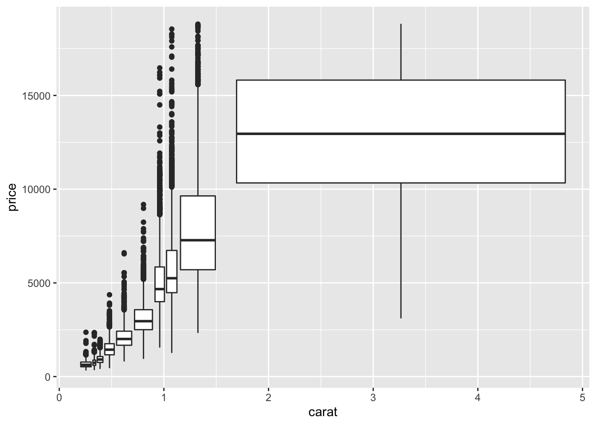
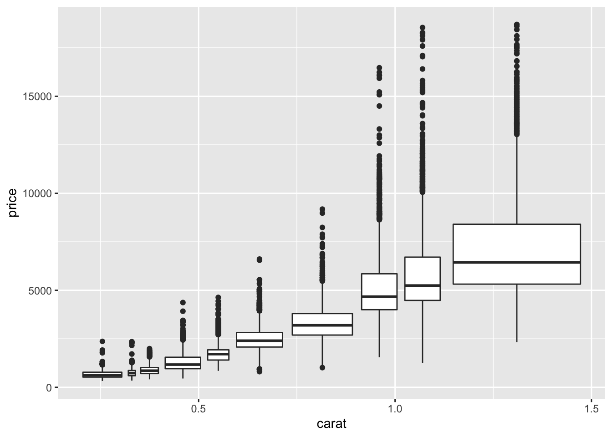
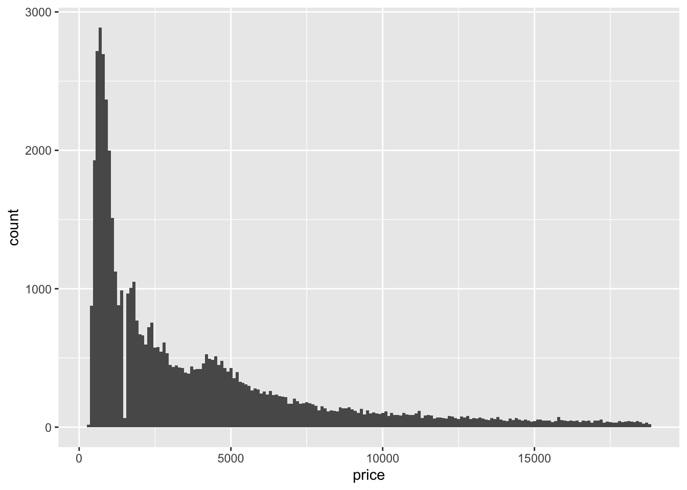

library(tidyverse)hmk_6
Exercise 1: In the diamonds dataset, some of the values are almost certainly bad (although it is not possible to be 100% sure which ones are bad and which are valid).
Below I Identify data that seems bad and explain why I think they are bad
Diamonds have variables for their length, width, and depth. (x, y, and z respectively)
Any of these dimenions cannot physically be 0.
Using the tidyverse function str_sort the dimensions of each diamond can be order numerically.
options(max.print = 20) limits the print output to 20 entries opposed to 999.
# x = diamond length
options(max.print = 20)
str_sort(diamonds$x, numeric = TRUE) [1] "0" "0" "0" "0" "0" "0" "0" "0" "3.9" "3.9" "3.9" "3.9"
[13] "3.9" "3.9" "3.9" "3.9" "3.9" "3.9" "3.9" "3.9"
[ reached getOption("max.print") -- omitted 53920 entries ]# y = diamond width
str_sort(diamonds$y, numeric = TRUE) [1] "0" "0" "0" "0" "0" "0" "0" "3.8" "3.9" "3.9"
[11] "3.9" "3.9" "3.9" "3.9" "3.9" "3.9" "3.9" "3.9" "3.9" "3.68"
[ reached getOption("max.print") -- omitted 53920 entries ]# z = diamond depth
str_sort(diamonds$z, numeric = TRUE) [1] "0" "0" "0" "0" "0" "0" "0" "0" "0" "0" "0" "0" "0" "0" "0" "0" "0" "0" "0"
[20] "0"
[ reached getOption("max.print") -- omitted 53920 entries ]All three of the described dimensions contain values of zero.
Create a data frame with bad data excluded
Below I create a data frame of only the diamonds that contain non zero dimenions
possible_diamonds <- filter(diamonds, x > 0 & y > 0 & z > 0)Testing if dimensionless diamonds still exist
# diamond lengths (x)
str_sort(possible_diamonds$x, numeric = TRUE) [1] "3.9" "3.9" "3.9" "3.9" "3.9" "3.9" "3.9" "3.9" "3.9" "3.9" "3.9" "3.9"
[13] "3.9" "3.9" "3.9" "3.9" "3.9" "3.9" "3.9" "3.9"
[ reached getOption("max.print") -- omitted 53900 entries ]# diamond widths (y)
str_sort(possible_diamonds$y, numeric = TRUE) [1] "3.8" "3.9" "3.9" "3.9" "3.9" "3.9" "3.9" "3.9" "3.9" "3.9"
[11] "3.9" "3.9" "3.68" "3.71" "3.71" "3.72" "3.73" "3.75" "3.77" "3.77"
[ reached getOption("max.print") -- omitted 53900 entries ]# diamond depths (z)
str_sort(possible_diamonds$z, numeric = TRUE) [1] "1.07" "1.41" "1.53" "2.3" "2.3" "2.4" "2.4" "2.4" "2.4" "2.4"
[11] "2.4" "2.4" "2.4" "2.4" "2.4" "2.4" "2.4" "2.4" "2.4" "2.4"
[ reached getOption("max.print") -- omitted 53900 entries ]Exercise 2: Visualise the distribution of carat, partitioned by price.
ggplot(possible_diamonds, aes(x = carat, y = price)) +
geom_boxplot(aes(group = cut_number(carat, 10)))
It appears that a few rather heavy diamonds are taking up a lot of room on the plot.
I will filter for diamonds of carat < 1.5
smaller_possible_diamonds <- filter(possible_diamonds, carat < 1.5)ggplot(smaller_possible_diamonds, aes(x = carat, y = price)) +
geom_boxplot(aes(group = cut_number(carat, 10)))
Exercise 3: How does the price distribution of very large diamonds compare to small diamonds? Is it as you expect, or does it surprise you?
Below I filter for diamonds of carats between 0.75 and 1.5. These are medium_diamonds
medium_diamonds <- filter(possible_diamonds, between(carat, 0.75, 1.5))
length(medium_diamonds$carat)[1] 18453Here I filter for diamonds of carat greater than 1.5. These are large_diamonds
large_diamonds <-filter(possible_diamonds, carat > 1.5)
length(large_diamonds$carat)[1] 5435We see that there are much fewer large diamonds than medium diamonds. This disparity in count can result in greater variation in prices. (Less supply so merchants can get away with different prices compared to market average across a large number of evenly priced diamonds)
Exercise 4: How many diamonds are 0.99 carat? How many are 1 carat? What do you think is the cause of the difference? (7.3.4)
Below I filter for diamonds of 0.99 carat and determine how many exist.
diamonds_0.99 <- filter(diamonds, carat == 0.99)
length(diamonds_0.99$carat)[1] 23Here I filter for diamonds of 1.0 carat and determine how many exist.
diamonds_1 <- filter(diamonds, carat == 1)
length(diamonds_1$carat)[1] 1558There are many more diamonds of 1 carat than diamonds of .99 carat. I believe this disparity exists because people would rather pay for a whole carat diamond. Merchants realize this and can get away with rounding up to 1.0 to charge more to their non gemologist patrons.
Exercise 5: Explore the distribution of price. Do you discover anything unusual or surprising? (Hint: Carefully think about the binwidth and make sure you try a wide range of values.) (7.3.4)
Below is a histogram portraying the number of diamonds at each price. I used binwidth = 100 to combine diamonds of similar price in bins of 100.
ggplot(diamonds, aes(x = price)) +
geom_histogram(binwidth = 100)
There are many more “cheaper” diamonds than expensive diamonds. Most diamonds are under $5000. Price seems to increase inversely to the number of diamonds.